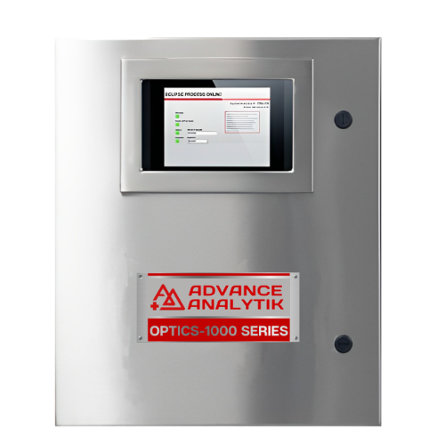
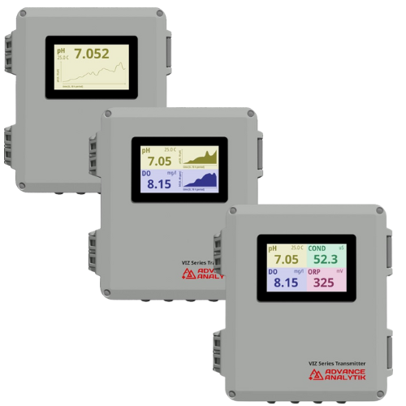
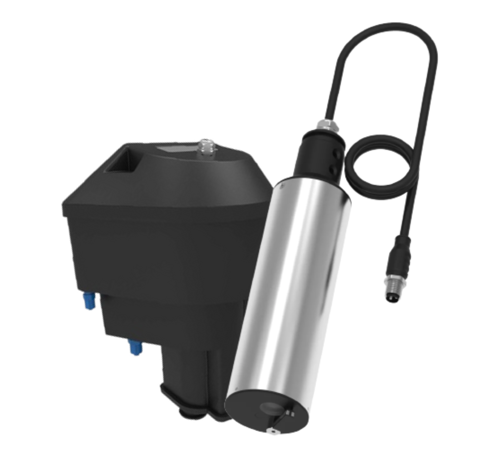

About Analytical Instrumentation Service
Advance Analytik delivers cutting-edge analytical instrumentation solutions tailored to address the complex needs of modern laboratories and a variety of industries. Our portfolio of high-performance analyzers, controllers, and sensors is engineered to provide precise and reliable results, ensuring critical processes operate smoothly across a range of applications. Whether it's environmental monitoring, chemical analysis, or quality control in production environments, our instruments are designed to meet the highest standards of accuracy and efficiency.
With a focus on innovation, our solutions are adaptable to evolving industry requirements, offering seamless integration with existing workflows and ensuring compliance with global regulatory standards. From trace detection of harmful substances to multi-parameter analysis for complex mixtures, Advance Analytik’s equipment delivers unparalleled performance. Our commitment to providing data-driven insights allows clients to optimize operations, enhance decision-making, and achieve sustainable outcomes.
Solutions Provided
- Environmental Monitoring Systems
- Laboratory Analytical Instruments
- Industrial Process Control
- Real-time Data Monitoring & Analysis
- Custom Calibration & Validation
Why Choose Us?
Comprehensive Solutions
From instrument selection to data interpretation and maintenance, we cover all your needs with end-to-end solutions.
Expertise
With decades of experience across industries like pharmaceutical, chemical, and environmental, our team provides unmatched expertise.
Real-time Support
Our commitment doesn’t end at installation. We offer ongoing support and troubleshooting for smooth operations.
Tailored Solutions
We offer customized solutions tailored to your specific industry needs, ensuring optimized performance and results.
Advanced Analytical Instrumentation Solutions

Analyzers
We provide a range of analyzers for, water quality analysis, ensuring precise measurement across various industries.
View Range
Controllers
Our controllers ensure seamless integration into existing processes, offering automation and real-time adjustments for water quality.
View Range
Sensors
Our high-precision sensors allow for continuous monitoring, detecting changes in water composition, and industrial emissions with superior accuracy.
View RangeApplications
Our analyzers, controllers, and sensors are widely deployed across a diverse range of industries including pharmaceuticals, chemical processing, food & beverage, environmental management, power generation, distilleries, common effluent treatment plants (CETPs), sewage treatment plants (STPs), cement manufacturing, oil refineries, etc. These advanced tools not only ensure process optimization but also play a crucial role in maintaining regulatory compliance and fostering sustainable operations. From precise monitoring to enhancing safety and efficiency, our equipment supports industries in reducing waste, conserving energy, and ensuring the highest standards of quality and environmental stewardship.